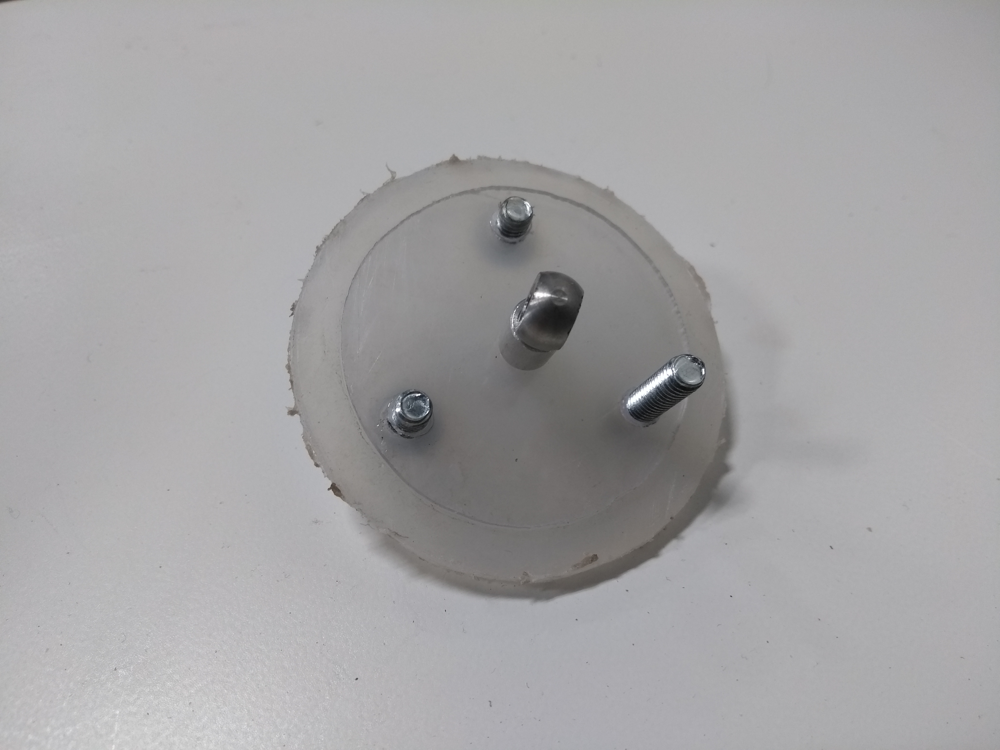

I’ve finally resigned myself to the fact that I won’t have a working engine ready in time for submission. My last ditch effort to save the engine by molding my own piston seals out of hot glue went better than I expected, but it still didn’t actually work. These hot glue seals were flexible and really did create an airtight seal, which was great, but they created a lot of friction, making it very hard to move my piston heads. By hand, it was possible to push them through, but they were nowhere near smooth enough for the engine to function properly. Surprisingly, these molded hot glue seals are probably my best seal attempt yet. I might’ve eventually found a working solution given enough time, but time is a resource I don’t have nearly enough of in this quadmester system.

I’ve gone ahead and finished assembling the rest of the engine, sans the piston seals. I may not have a functional engine, but I do have a functional engine model. Mechanically, it moves in an identical manner to a working Stirling engine — however it consumes energy to remain in motion, rather than producing it. I’ve tried powering the flywheel with a drill, and mechanically the engine holds up — which helps me believe that if I had been able to fix the seal problem, this engine might’ve actually worked.
In the end, even though I don't have a working Stirling engine, I think this project has been a success overall — my theoretical model turned out really well, and I got to experience the entire design process; iterating over my design multiple times to try and get it to work.
I think going for an engine of this scale might have been overambitious as well — if I had gone for a smaller design using premade parts such as syringes, things might have turned out better in the end. I may or may not have been able to fix this engine's mechanical issues if I had more time, but in the end, it's the journey that counts and I think I've had a good run with this project.
That’s the end of these blog posts — watch out for my final summary video, coming out soon!
Footnote: Turns out this isn't actually my last blog post — check out my machining montage in the next one!